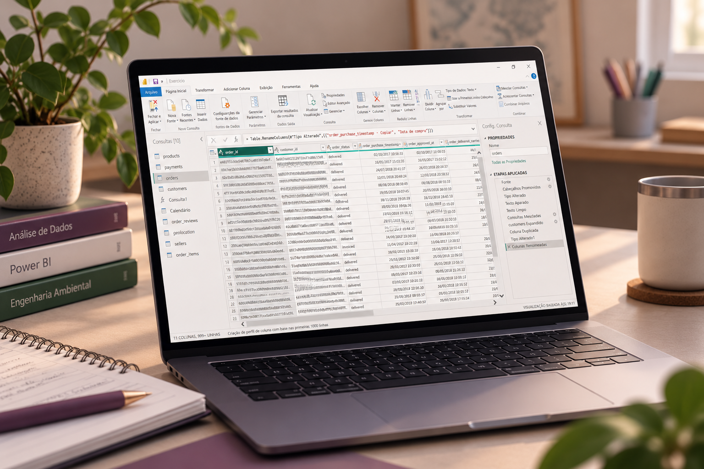
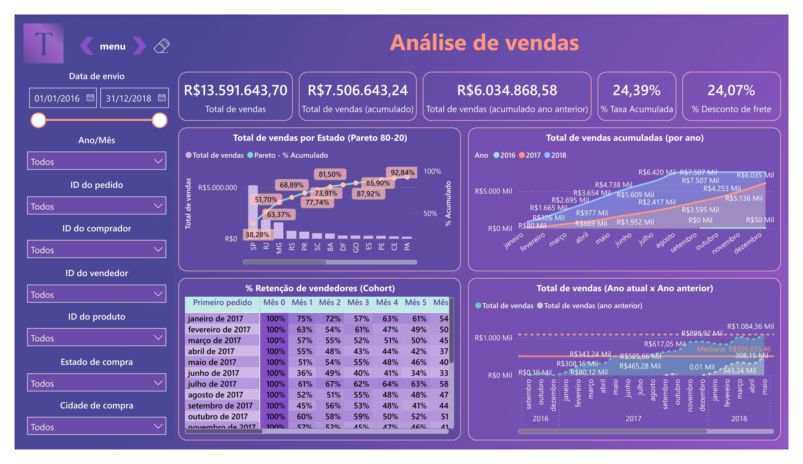
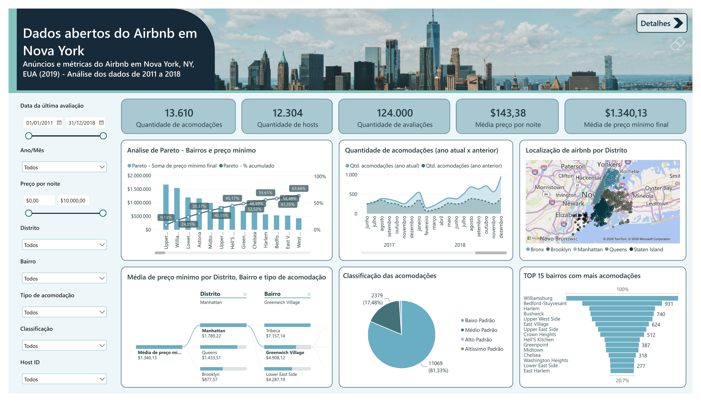

Glenda Flores
Analista de Dados e BI | Engenheira Ambiental
Seja bem-vindo(a) ao meu portfólio!
Nesta página, apresento projetos de Análise de Dados aplicados a diferentes contextos, além de um pouco da minha trajetória profissional.

Sobre mim
Engenheira ambiental em transição para Análise de Dados e Business Intelligence.
Tenho mais de três anos de experiência em consultoria ambiental, atuando na elaboração de estudos e relatórios técnicos, incluindo o desenvolvimento de análises de dados ambientais e dashboards.
Ao longo da minha trajetória, trabalhei com diferentes tipos de informação e desenvolvi uma visão analítica voltada à organização, à interpretação de dados e à comunicação de resultados.
Essa experiência me levou a aprofundar meus conhecimentos em Análise de Dados e Business Intelligence e ampliar as possibilidades de aplicação dessas habilidades em diferentes contextos.
Busco oportunidades como Analista de Dados ou Analista de BI.

Ferramentas e Tecnologia

Ferramentas de análise e outras habilidades
Excel
Organização, tratamento e análise de dados.
Power BI
Tratamento de dados, modelagem, criação de dashboards e análises com DAX.
SQL
Em aprendizado, com foco em consultas e extração de dados.

QGIS
Análise e visualização de dados geoespaciais.
Word
Elaboração e formatação de documentos e relatórios técnicos.
Inglês
Comunicação e leitura em nível intermediário.
Experiência Profissional
Analista Ambiental Jr.
MRS Ambiental
- Analisei dados sobre recursos hídricos, clima, qualidade da água, sedimentos, solo e ar, construindo gráficos em Excel e dashboards no Power BI;
- Melhorei processos de atualização de gráficos de monitoramento contínuo de dados ambientais;
- Atuei na elaboração de diagnósticos, avaliações de impactos ambientais e programas ambientais;
- Participei de processos de licenciamento ambiental, com elaboração de relatórios de condicionantes e organização de documentos.
Estagiária
MRS Ambiental
Estagiária
Tecnicall Engenharia
Projetista
Concreta Consultoria e Serviços
Empresa Júnior
Formação e Cursos
Engenharia Ambiental
Universidade de Brasília (UnB)
Formação Analista de Dados
Comunidade DS
Certificações em Ferramentas

Power BI para Análise de Dados
Excel para Análise de Dados
Projetos em Destaque

Monitoramento de Qualidade da Água
Análise de dados do monitoramento de qualidade da água de um corpo hídrico litorâneo, em 10 pontos amostrais

Análise de E-Commerce
Análise de vendas, produtos, pagamentos, etc. de um E-Commerce brasileiro

Análise de dados abertos do Airbnb em Nova York
Análise de dados do Airbnb em Nova York, como acomodações, valores e localidade